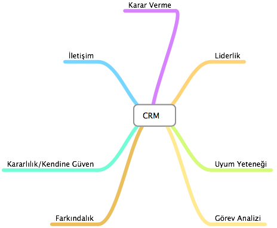

10 Mart 1989 tarihinde, kanatlardaki buz ve karlanmadan dolayı Air Ontario’ya (Uçuş 1363) ait Fokker F-28-1000 Fellowship havalanmasının ardından düştü. Kaza sonucunda 24 kişi hayatını kaybetti. Uçuştan hemen önce, kabin görevlisi Sonia Hartwick kanatlarda kar olduğunu görmüş fakat kokpite bu bilgiyi vermekten kaçınmıştı. Kokpiti bilgilendirmemesinin nedeni başka bir uçuşta güvenlikle ilgili bir konuda pilotları uyardığında kendisini utandıran bir tecrübe yaşamış olmasıydı. Bu sebeple pilotların hostesten gelecek operasyonel bir bilgiyi iyi karşılamayacaklarını düşünmüştü. Ek olarak etkin görevde olmayan bir pilot da kanatlardaki karlanmayı görmüş, ancak bir başka pilotun yetki alanına girmek istemediği için kabin ekibini bilgilendirmemişti.
DÜŞÜNELİM
Lütfen aşağıdaki sorunun cevabını düşünün: Sizce yukarıdaki olayın CRM ile ne tür bir ilişkisi olabilir?
EĞİTİMİN AMACI
Kısaca CRM adlı bu eğitimin temel hedefi sizlere CRM’i genel hatlarıyla tanıtmaktır. Eğitim sonunda aşağıdaki soruları rahatlıkla cevaplayabilmeniz beklenmektedir:
- CRM nedir? Ne değildir?
- CRM temel öğeleri nelerdir?
MODÜL 1: CRM Nedir? Ne Değildir?
CRM Nedir? Ne Değildir?
CRM (Crew Resource Management) Mürettebat Kaynak Yönetiminin kökeni, NASA’nin desteklediği 1979 yılında gerçekleştirilen ‘Resource Management on the Flightdeck’ başlıklı araştırmaya dayandırılmaktadır.
CRM, modern uçaklarda bulunan kokpit ses ve uçuş kayıtlarının ışığında uçak kazalarına çözüm amacıyla geliştirilmiştir. Bu kayıtlardan alınan bilgiler birçok kazanın ne uçak ya da uçak sistemlerindeki bir arızadan ne de kabin ekibinin uçuş yeterlikleri ya da ekibin teknik yetersizliğinden kaynaklanmadığını; bunun yerine kazaların ekibin kendilerini içinde buldukları duruma uygun davranamamalarından kaynaklandığını ortaya koymuştur. Örneğin, ekip üyeleri arasındaki yetersiz iletişim durum farkındalığını kaybetmeye, uçaktaki takım çalışmasının sekteye uğraması nedeniyle hatalı kararlara alınabilmekte ve bunun sonucunda istenmeye durumlar ya da ölümcül kazalar meydana gelmektedir.
CRM geniş bir çerçevede iletişim, durum farkındalığı, problem çözme, karar verme, ve takım çalışmasını içeren bilgi, yetenek ve tutumları kapsamaktadır. CRM’nin içerdiği bu terimler yeni değildir. Havacılığın başlangıcından beri, Airmanship, Captaincy, Crew Co-operation vb. daha geniş başlıklar altında tanımlanmışlardır. Fakat bu terimler geçmişte resmi bir şekilde yapılandırılmamış ya da adlandırılmamıştı, CRM bu konudaki çözüm olarak düşünülebilir. CRM, uçuş operasyonlarının güvenlik ve etkinliğini geliştirmek amacıyla bütün olası kaynaklar, ekipmanlar, prosedürler ve bireylerin yönetimi sistemi olarak tanımlanabilir.
CRM uçağın yönetilmesi için gerekli teknik bilgi ve yeterliklerden çok uçuşun yönetilmesi için gerekli bilişsel ve kişiler arası yeterliliklerle ilgilenmektedir. Bu çerçevede, bilişsel yeterlikler durumsal farkındalığı kazanma ve sürdürmeye, problem çözmeye ve karar vermeye yönelik bilişsel süreçler olarak tanımlanır. Kişiler arası yeterlikler, takım çalışması ile ilişkili iletişim ve davranış kalıpları olarak tanımlanır. Bu süreçler diğer uçaklar ve farklı yer ekipleriyle etkileşime geçilmesi gerektiği için tek pilotlu uçuşlar için de geçerlidir.
İZLEYELİM
Lütfen aşağıdaki videoyu izleyelim:
ÖZETLE
CRM; (Briefly CRM is ...)
- Ekip performansını artırma amacını güden geniş çaplı bir sistem
- Bütün ekibi ve ilgili diğer çalışanları kapsayan bir süreç
- Hava ekibinin eğitimlerinin tamamına genişletilebilecek bir sistem
- Ekip üyelerinin tutum ve davranışlarına ve onların güvenlik üzerindeki etkilerine odaklanılması
- Bireylerin kendi davranışlarını inceleme imkanı kazanmaları ve kokpit takım çalışmasını iyileştirmeye yönelik bireysel kararlar alabilme şansı
- Ekibin bir eğitim birimi olarak işe koşulması
- Güvenlik iyileştirmesi odaklı etkin katılım eğitimi
- Kendini iknadır
Öte yanda CRM (On the other hand CRM is NOT);
- Bir gecede uygulanabilecek bir düzeltme
- Bir kaç özel konuya odaklanmış bir eğitim
- Diğer eğitim süreçlerinden bağımsız bir sistem
- Psiklojik değerlendirme ya da kişisel profil
- Diğer ekip elemanları ile nasıl çalışacaklarına dair özel bir reçete
- Birey merkezli bir ekip eğitimi
- Bir pasif doğrudan anlatım sınıf eğitimi
- Yönetim tarafından tarafından kokpit davranışlarına müdahale DEĞİLDİR.
1. CRM modern uçaklarda bulunan hangi teknolojilerden faydalanılarak geliştirilmiştir?
a. Bilgisayar teknolojileri
b. İniş/Kalkış destek teknolojileri
c. İletişim Teknolojileri
d. Ses ve uçuş kayıt teknolojileri
Tebrikler, Mürettebat Kaynak Yönetimi, modern uçaklarda bulunan kokpit ses ve uçuş kayıtlarının ışığında uçak kazalarına çözüm amacıyla geliştirilmiştir.
Maalesef olmadı. Lütfen modülü tekrar gözden geçirin.
2. CRM aşağıdaki öğelerden hangisini kapsamaz?
A. Teknik yeterlilik
B. İletişim
C. Problem çözme
D. Karar verme
Tebrikler, CRM geniş bir çerçevede iletişim, durum farkındalığı, problem çözme, karar verme, ve takım çalışmasını içeren bilgi, yetenek ve tutumları kapsamaktadır.
Maalesef olmadı. Lütfen modülü tekrar gözden geçirin.
3. Aşağıdakilerden hangisi CMR için söylenebilir?
A. Birey merkezli bir ekip eğitimidir.
B. Güvenlik iyleştirmesi odaklı etkin katılım eğitimidir.
C. Yönetim tarafından tarafından kokpit davranışlarına müdahaledir.
D. Psiklojik değerlendirme ve kişisel profil oluşturma sürecidir.
Tebrikler, CRM’nin temel amaçlarından biri güvenlik iyileştirmesi yönünde etkin katılımı sağlamaktır.
Maalesef olmadı. Lütfen modülü tekrar gözden geçirin.
MODÜL 2: CRM’in Temel Öğeleri Nelerdir?
CRM’in Temel Öğeleri Nelerdir?
CRM’in 7 temel öğesi bulunmaktadır. Aşağıdaki şekil üzerine tıklayarak dilediğiniz öğeyi inceleyiniz.

LİDERLİK
Diğer ekip üyelerinin etkinliklerini koordine edebilmek, yönetebilmek ve bir takım olarak çalışmaya teşvik edebilmeyi ifade etmektedir. Lütfen aşağıda özetlenen liderlik türlerini, liderlerin sorumluluklarını ve etkili liderlerin özelliklerini yakından inceleyiniz.
Etkin bir şekilde katılıma hazır ve istekli olma, rahatsızlık duyulan konularda kendini çekinmeden ve net biçimde ifade edebilmeye yönelik becerilerdir. Kararlı davranışta olmanın önünde bazı engeller olabilir.
Bilgi, yönerge ve emirlerin doğru şekilde alınması ve gönderilmesine yönelik becerileri içerir. İletişim süreci sözlü, yazılı ya da sözsüz olabilir. Mürettebata ile iletişimde mesajların açık ve doğrudan gönderilmesi, mürettebattan gelen mesajların da aynı biçimde algılanması önemlidir. Ayrıca dönüt verme de iletişim sürecinin önemli bir unsurudur. Aşağıda yer alan iletişim sürecine ilişkin şekli inceleyiniz:
Şekil:Kaynak mesajı gönderir, alıcı mesajı alır ve dönüt verir
Bu süreçte kaynağın ve alıcının çeşitli sorunlulukları vardır. Bunları inceleyiniz:
Kaynağın (Gönderenin) Sorumlulukları
• Uygun bir kanal kullanması
• Standartlar dahilinde, yerinde, doğru bilgi vermesi
• Uygun zamanda bilgi sağlaması
• Dönüt istemesi
Alıcının Sorumlulukları
• Aktif dinleme
• İletişim sonucunda eyleme geçme
• Cevap verme
• Anlaşılmayan mesajlarda açıklama isteme
İletişim sürecinde bazen alıcı kaynaktan gelen mesajı doğru algılayamayabilir ya da tam tersi kaynak alıcıdan gelen dönütü doğru biçimde algılayamayabilir. Bu duruma iletişim engelleri yol açar.
Görev analizi, kısa dönem, uzun dönem ve beklenmedik durum planları geliştirebilme, sistem kaynaklarını koordine edebilme, tahsis edebilme ve gözlemleyebilmeye ilişkindir. Görev analizi, uçuş öncesinde, süresinde ve sonrasında olmak üzere üç aşamada gerçekleştirilir. Şimdi bunları inceleyelim:
Görev analizi süreçleri:
A. Onay / Uçuş öncesi
• Planlama
• Hazırlık
• Brifing
• Profesyonel
• Hedefe odaklı
• Sorumlulukların dağıtılması
• Etkişimli
• Tam
B. Uçuş sürecinde
• Görev sürecinin izlenmesi
• Değişiklik ve sorunların tanımlanması ve raporlanması